Brown noise plays a steady low tone that can help with focus. It stays off until you turn it on.
email copied
Based in Hungary · Open to remote & relocation
I help people feel safe in systems they don't trust yet.
I design the behavior and systems layer — for the moments products forget people exist, and for the problems nobody has named yet. From research to prototype.
Work
01 / 07
Human-first NLP · People MatchingBuilding enough safety for someone to type the thing they actually want.
Literature-grounded design
Three generations of validation
Developer feasibility synch
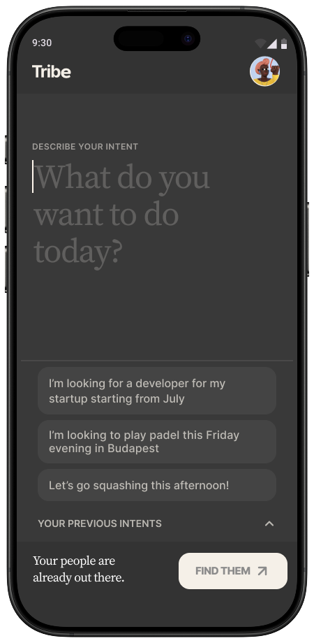
This case study documents the complete MVP architecture and human-AI interaction systems designed for handoff.
MVPProduct DesignHuman-AI Interaction
Open case study
02 / 07
Multi-modal Feedback Design · LLM UncertaintyWhen AI is most uncertain, humans are least equipped to notice
In progressHuman FactorsHuman-AI Interaction
03 / 07
Career Anxiety Research · Dashboard DesignGiving someone a clear next move when the future feels automated away.
Secondary research
Constraint-system design
AI vs. human comparison
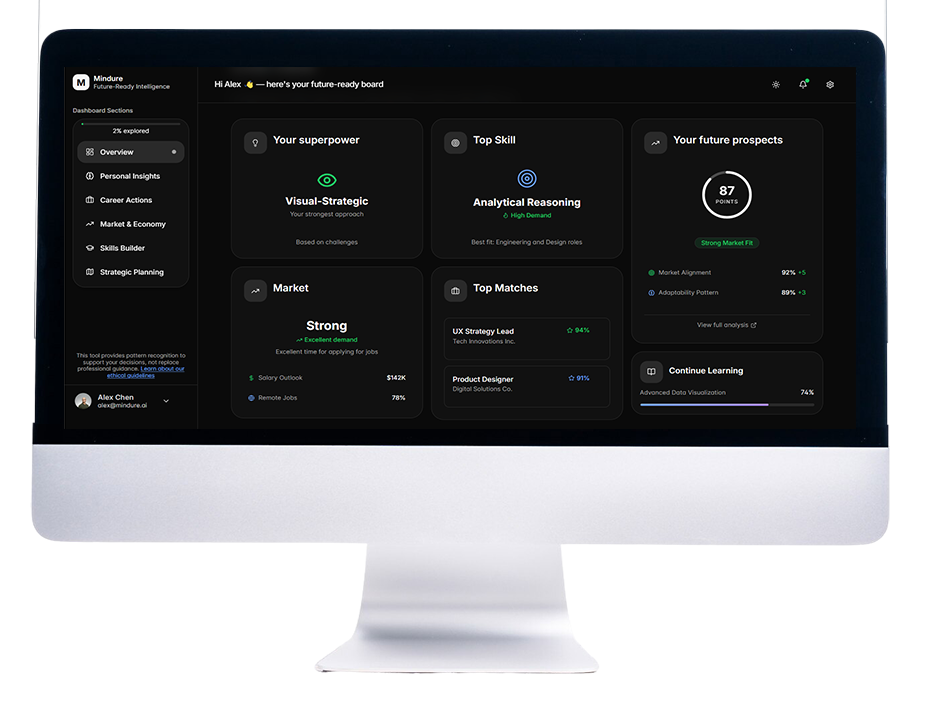
When people are worried about losing their jobs, showing them a screen packed with numbers and alerts doesn't inform them. It confirms the fear.
Research prototypeHuman FactorsHuman-AI Interaction
Open case study
04 / 07
Therapy on Artboard with Real Time GuidanceReaching someone through what they make, when words won't come.
User survey, n=16
Usability test 1, 5 participants
Usability test 2
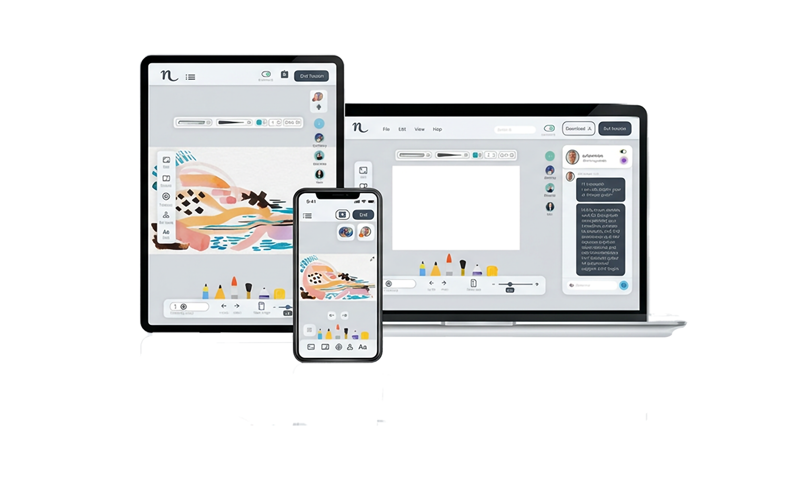
The making is the session. Words come after.
Product DesignUX/UIBranding
Open case study
05 / 07
Physical Product · Client Work · LeicaThe third version wasn't asked for. It was the one manufactured.
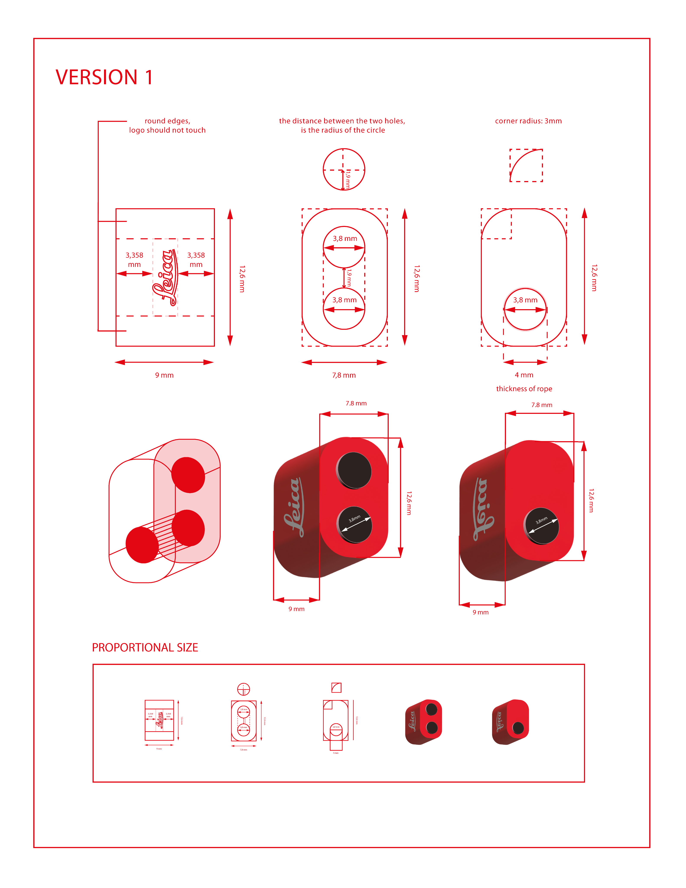
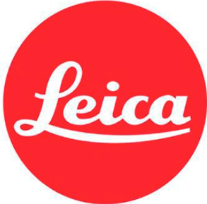
Three design variants resolving the same manufacturing constraints differently — logo clearance, hole radius, corner tolerance. Proof that design decisions have physical consequences.
Client workPhysical product
06 / 07
Client Work · Puzled · 0→1B2B Registration + Dashboard
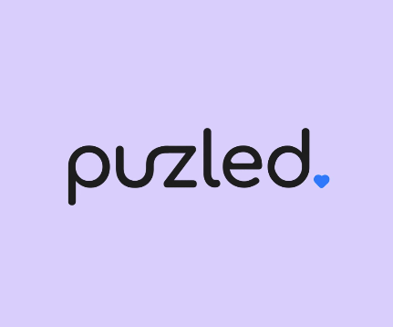
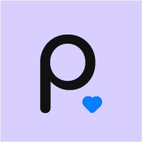
No prior users. Wireframed entry flow, dashboard architecture, and deep business analytics from first principles — cognitive load, trust, orientation under uncertainty.
Client work0→1B2B
07 / 07
Civic Design · NonprofitMaking public grant eligibility readable by the people it was written for
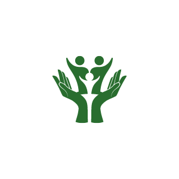
Making legal frameworks and public grants approachable for the families who need them the most — but get lost before they ever reach the application.
Civic designNonprofit
Visit live site
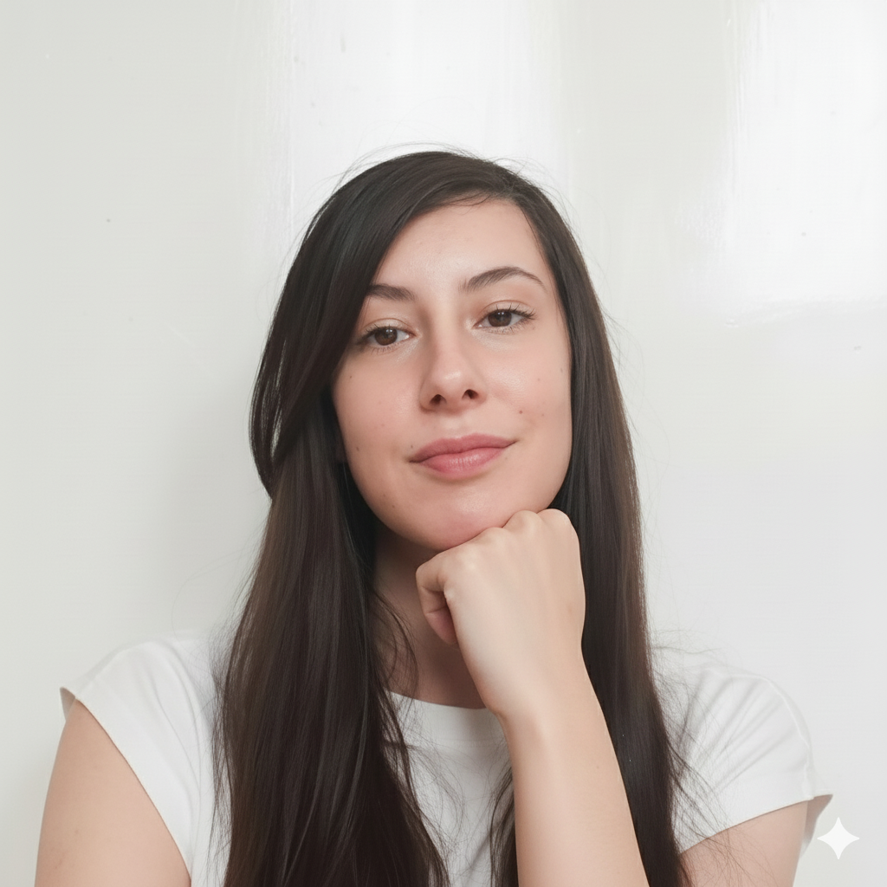
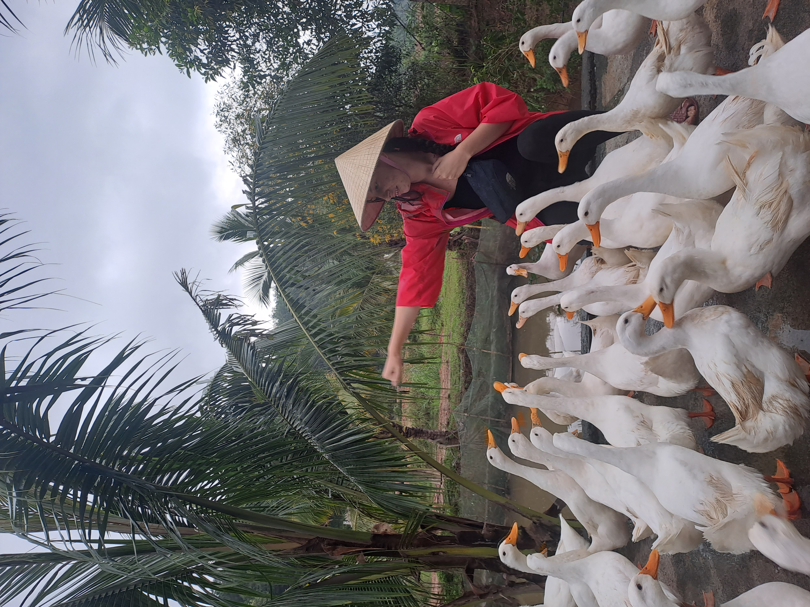
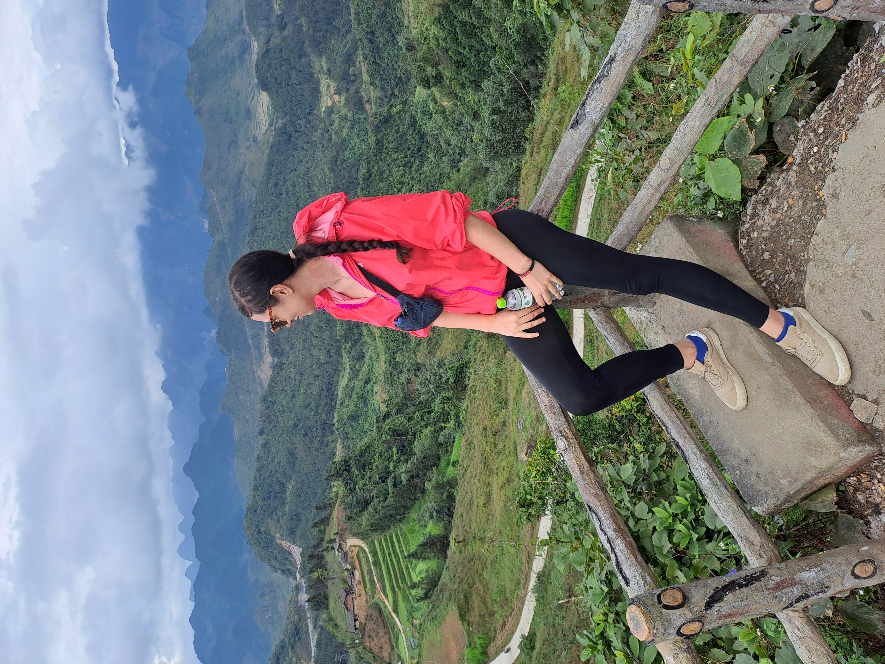
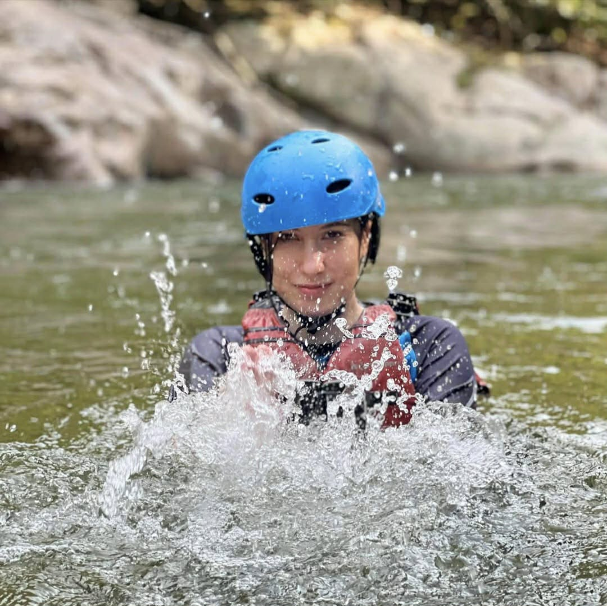
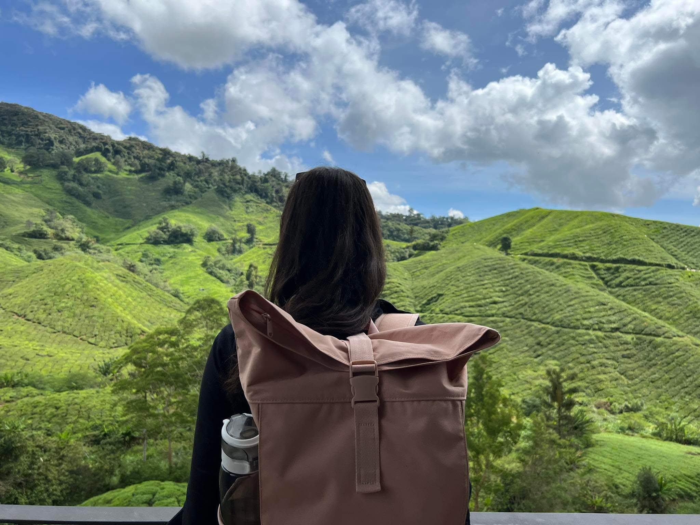
About me
Lens — what shapes the way I design
My background runs through graphic design, live broadcasting, and spatial motion in AR/VR — environments where cognitive load is real, timing is everything, and there's no room for error.
Somewhere in the middle of that, I spent years moving through Europe, Asia and Australia with a backpack — living alongside indigenous communities where the relationship between people and their environment was immediate and unfiltered. That became my first education in human factors.
I'm based in Szombathely, Hungary, and I bring all of it into product design.
What pulls me in are the small things — the half-second a screen hesitates, a word that lands slightly off, the moment you can feel someone quietly start to give up. One little thing nudges the next, and usually no one can point to what actually went wrong. I love following that thread back to where it started, and making the whole thing feel calmer and more human to use.
I go deep before I go wide. I need to understand how a problem behaves in the real world before I start shaping a solution.
I find honest collaboration easier than polite collaboration. Not blunt — just direct.
If I go quiet in a meeting, I'm not disengaged. I'm mapping the logic in my head, finding where it breaks.
When I lived in remote villages across Australia and Asia, I watched how people built their tools. Nobody designed for a perfect scenario — they designed for the actual mud, heat, and exhaustion they dealt with every day.
Software should do the same. When someone struggles with an app, they're not stupid. The interface was just built for someone sitting at a quiet desk — not someone on a slow connection, in a noisy room, on a hard day.
I believe every design decision revolves around this reality. At least this is what I design for.
Human Factors & Usability Engineering
Designing for cognitive limits, not ideal users.
Arizona State University · Specialization Certificate · 2026View ↗
Systems Engineering
Seeing the whole before any part — structure before interface.